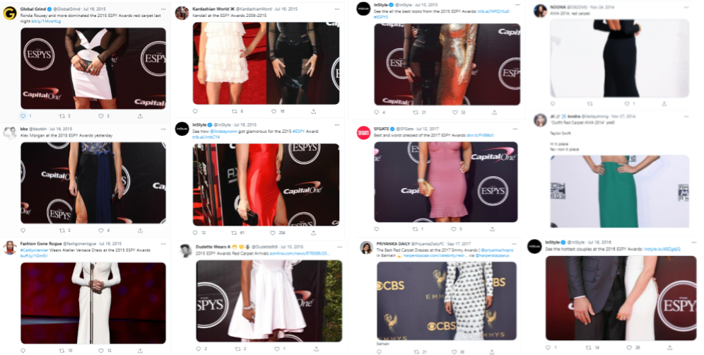
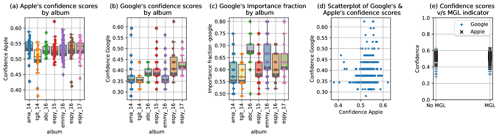
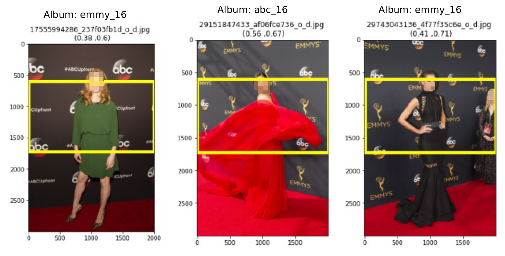
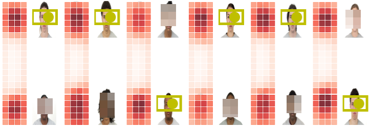
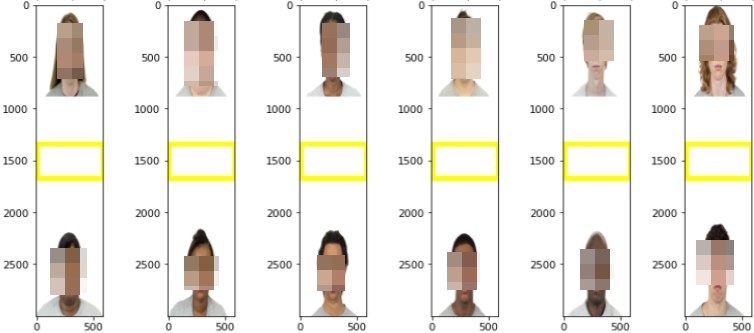

In this paper, we audit saliency cropping algorithms used by Twitter, Google and Apple to investigate issues pertaining to the male-gaze cropping phenomenon as well as race-gender biases that emerge in post-cropping survival ratios of face-images constituting grid images. In doing so, we present the first formal empirical study which suggests that the worry of a male-gaze-like image cropping phenomenon on Twitter is not at all far-fetched and it does occur with worryingly high prevalence rates in real-world full-body single-female-subject images shot with logo-littered backdrops. We uncover that while all three saliency cropping frameworks considered in this paper do exhibit acute racial and gender biases, Twitter’s saliency cropping framework uniquely elicits high male-gaze cropping prevalence rates. In order to facilitate reproducing the results presented here, we are open-sourcing both the code and the datasets that we curated at https://vinayprabhu.github.io/Saliency_Image_Cropping/. We hope the computer vision community and saliency cropping researchers will build on the results presented here and extend these investigations to similar frameworks deployed in the real world by other companies such as Microsoft and Facebook.
Saliency-based Image Cropping (SIC) is currently used to algorithmically crop
user-uploaded images on most major digital technology and social media platforms,
including Twitter [1, 2, 3], Adobe [4, 5], Google (via the CROP_HINTS API) [6],
Microsoft (via the generateThumbnail and areaOfInterest APIs) [7],
Filestack [8] and Apple [9, 10]. (See the supplementary material for real-world
examples from Facebook and Google.) Although saliency-based image
cropping technology is ubiquitously integrated into major platforms, it often
operates under the radar where its existence is hidden from the people
that interact with these platforms. Recently, this technology came under
scrutiny as Twitter users shared collective frustration with the apparent
racial discriminatory tendency of the technology exemplified by the viral
Obama-McConnell1
image [1]. (See Figure 1.)
Typically, SIC entails two phases:2 saliency estimation and image cropping [12]. In the saliency estimation phase, the weights or “noteworthyness” of each of the constituent pixels or regions in an image are estimated to generate a binary mask or a continuous-valued heatmap of pixel-wise “importance.” This is then processed by an image cropping algorithm that utilizes a segmentation policy that attempts to retain the higher-weighted noteworthy regions while discarding the regions deemed less salient.
In this paper, we audit saliency cropping algorithms from three prominent technology platforms—Twitter, Google and Apple—focusing on two areas of inquiry. The first area pertains to the nature and extent of the prevalence of male-gaze-like artifacts in post-cropped images emerging in real-world full-body single-subject settings with logo-littered backdrops. The second area concerns racial and gender-based biases observed in the post-cropping survival ratios of face-image grids.
The rest of the paper is organized as follows. Section 2 details the three cropping frameworks considered in this paper. In Section 3, we present the design and results of our study on male-gaze-like artifacts. Section 4 covers the details of our experiments revealing racial and gender biases using an academic dataset. We conclude the paper in Section 5.
CROP_HINTS response to
the Obama-McConnell image. (c) The Apple ABSC response to the
Obama-McConnell image. In this section, we present introductory details pertaining to the three SIC frameworks we investigate in this paper: Twitter, Google, and Apple.
In January 2018, Twitter announced a departure from the erstwhile face-detection-based approach for cropping images and revealed that: “A better way to crop is to focus on “salient” image regions. A region having high saliency means that a person is likely to look at it when freely viewing the image.” [2]. Twitter’s SIC framework consists of two components: The first is a saliency estimation neural network that happens to be a knowledge-distilled Fisher-pruned version [13, 14] of the DeepGaze II deep learning model [15]. This model produces the most salient point (the focal point) in the image that is then used by a cropping policy3 that produces the final cropped image based on the desired cropping ratio (See Section 2.3 of [3].) With this update, the claim is that Twitter’s SIC is “... able to focus on the most interesting part of the image” and “... able to detect puppies, faces, text, and other objects of interest.” We note that while their paper [3] claims the model was trained on “three publicly available external datasets: Borji and Itti [16], Jiang et al. [17], and Judd et al. [18]”, Twitter’s blog post [2] states that “some third-party saliency data” was also used to train the smaller, faster Fisher-pruned network.
CROP_HINTSGoogle offers its SIC framework under the CROP_HINTS API as part of its Cloud
Vision API suite. While we could not find any publicly accessible dissemination
on how the underlying model is trained or on what datasets, we did
parse through the available API documentation to glean the following
information.
As revealed in Google’s Features list
documentation,4
the CROP_HINTS detection API ingests an image and “provides a bounding
polygon for the cropped image, a confidence score, and an importance fraction of
this salient region with respect to the original image for each request.”
The confidence score is defined as the “confidence of this being a salient
region” and is a normalized floating point values that is the range of [0,
1].5
We performed all our experiments using the Python API whose documentation page6 also revealed that Google’s definition of the input aspect ratio is the inverse of that of Twitter’s.
Apple’s SIC framework was unveiled during the WWDC-2019 event [10], where two saliency-based cropping options were made available to the developers: Attention-Based Saliency Cropping (ABSC) and Objectness-based saliency cropping.7 As stated at their event [10], the attention-based cropping approach was human-aspected and trained on eye movements while the objectness-based approach was trained to detect foreground objects and trained on object segmentation. The associated slide deck [10] also revealed two important items of relevance: Apple’s definition of what saliency is, and the factors that could potentially influence the saliency of an image region. Apple defines saliency as follows: “Attention-based saliency is a human-aspected saliency, and by this, I mean that the attention-based saliency models were generated by where people looked when they were shown a series of images. This means that the heatmap reflects and highlights where people first look when they’re shown an image.” Furthermore, with regards to the factors that influence saliency, we learn that “the main factors that determine attention-based saliency, and what’s salient or not, are contrast, faces, subjects, horizons, and light. But interestingly enough, it can also be affected by perceived motion. In this example, the umbrella colors really pop, so the area around the umbrella is salient, but the road is also salient because our eyes try to track where the umbrella is headed.” By parsing through the documentation8 in [9], we gathered that Apple’s ABSC API outputs shaped “image-cell region” saliency heatmaps where each entry quantifies how salient the pixels in the image-cell are by means of a normalized floating point saliency value (), “where higher values indicate higher potential for interest.”
Firstly, we note that the notion of fixed-size input-image-independent
image-cell in Apple’s SIC framework corresponds to the salient-region notion
used by Twitter’s SIC. However, one difference is that Twitter’s salient
regions are image-dependent and identified in the saliency map using the
regionprops algorithm in the scikit-image library. (See footnote on Page 9
of [3].) Secondly, Apple’s and Google’s APIs return confidence scores along
with the model inference whereas Twitter’s SIC framework does not.
Thirdly, Google’s CROP_HINTS API is not available for free use in the
public domain, and does not return saliency values at the pixel-level,
saliency-region level, or image-cell level. Fourthly, while Google’s and
Twitter’s cropping frameworks allow for user-defined aspect ratios to be
input into the cropping policy, Apple’s ABSC framework returns a single
preset bounding box to use in cropping the input image to “... drop
uninteresting content.” We have summarized the algorithm comparisons in
Table 1.
| Feature ∖ SIC-platform | Apple | ||||
| Custom aspect ratio | Yes | Yes | No | ||
| Returns saliency map | Yes | No | Yes | ||
| Returns model confidence | No | Yes | Yes | ||
| Available for free? | Yes | No | Yes | ||
| Python API? | Yes | Yes | No | ||
| Yes | No | No | ||
The idea of the male gaze was introduced by the British feminist film theorist Laura Mulvey in “Visual Pleasure and Narrative Cinema” [19], authored in 1973. Mulvey situates male gaze as a process whereby women are transformed into passive recipients of male objectification in media representations. (See “Woman as image, man as bearer of the look” in [19].) This often manifests as a stereotypical gaze distribution characterized by relatively longer viewing time directed at the chest and the waist-hip areas of the women being gazed upon. The experimental research in [20], for example, revealed that young heterosexual men display a distinctive gaze pattern when viewing images of a twenty-year-old female subject, with more fixations and longer viewing time dedicated to the upper body and waist-hip region. Similarly, the authors in [21] also showed that the so-termed ’attractiveness fixations’ of heterosexual males did spread from the stomach up towards the upper chest region (See Figure 1 on page 9 in [21] for the distribution heatmaps.) There was a fear on platforms such as Twitter that the crowd-sourced data used in the training of the saliency estimation neural network may have had a male heterosexual labeling bias and thereby encoded a male gaze adherent fixation in the resulting algorithm. In this section, we explore this phenomenon and shine light on the whyness of such occurrences in the saliency-cropped images.

Figure 2 shows a collage of real-world examples of user-uploaded images on
Twitter that exhibited male-gaze-like (MGL) artifacts. Upon sifting through
the individual images, we gathered that a common theme emerged. All
these images were full-body images of people shot during red-carpet
events, such as the ESPYs and the Emmy awards, with a background
littered with corporate and event logos. Also, these images were long and
thin images, i.e. images with length to width ratio being greater than 1.
At this juncture, we suspected that the saliency mechanism was also
trying to pay heed to the background logos and textual artifacts (as also
suspected in Section 3.4 of [3]) resulting in serendipitous male-gaze-like
artifacts in the cropped image. This motivated the following questions:
Q1: What is the underlying explanation for these male-gaze-like artifacts?
Q2: Are these observations just an artifact of sampling bias?
Q3: Is this phenomenon unique to Twitter’s SIC model, or does it also extend to
Apple’s ABSC and Google’s CROP_HINTS frameworks as well?
To answer these questions, we curated a dataset of real-world images spanning 336 images over seven different albums shot over a two year period under varying real-world lighting conditions. We passed the images through all three cropping frameworks presented in Section 2. Then, we hand-labelled the resultant cropped images into two categories: those that exhibited MGL artifacts and those that didn’t. Finally, we computed the MGL risk ratios for the individual albums as well as for the overall dataset.
It was clear from the tweet-texts that the constituent images in Figure 2 which
inspired this experiment were from red-carpet events such as ESPY awards and
the Emmy awards ceremonies, a clue that was crucial in helping us unearth the
primal repository of such images: The Walt Disney Television official Flickr account
page.9
Then, with the help of a team of human volunteers, we curated seven
sub-datasets that were event albums posted from this account that contained
images of women that also satisfied all of the following criteria:
Size-ratio criterion: The height-to-width ratio should be at least 1.25.
Full-body criterion: The image should contain the subject’s full body and
should not have any MGL artifacts to begin with.
Consent criterion: The image should be clearly shot in a public setting where
it is ostensibly clear that the subject was consensually and consciously present to
be photographed as part of a public event, and bereft of any voyeuristic artifacts.
Background constraint: The image should contain a background littered with
corporate and event logos.
Permissions criterion: The image should be ethically viable to be
subjected to our research plan from the point of view of frameworks
such as Attribution-NoDerivs 2.0 Generic license (CC BY-ND 2.0)
that facilitates analyses with the attribution and noDerivatives
constraints.10
We curated the dataset in the form of static URL lists that we then passed as
inputs into the three above listed SIC framework APIs.
As shown in Table 1, Google’s CROP_HINTS API does not return saliency values
but returns a bounding box as per the user-defined aspect ratio. While Apple’s
ABSC framework does return a 68 x 68 pixel buffer of floating-point saliency
values, it only provides for a preset single bounding box whose dimensions
might not be adherent to the aspect ratio being across enforced uniformly
across all frameworks. Therefore, we formulated the following strategy to
compare the results. We treat Twitter’s SIC framework to be the base
framework and adapt the other two to perform a fair comparison. In the
case of Google’s CROP_HINTS framework, we directly use the bounding
box estimated by the model in response to the same image with the
aspect ratio set to be precisely the inverse specified for Twitter’s cropping.
Specifically, we set the aspect ratio to be 0.56 for Twitter’s SIC and
for
Google’s CROP_HINTS API.
For Apple’s ABSC, we first up-sample the 68x68 saliency heatmap to fit the
image size using OpenCV’s resize() function (with the default bilinear
interpolation), and then find the focal point (or the max-saliency point) from this
upsampled image. Then, we pass the co-ordinates of the focal point along with
the same universal aspect-ratio (of 0.56) into the plot_crop_area()
function11
to obtain the final crop. This essentially helps us produce the result that answers
the query: “What would the crop look like if we were to use Apple’s saliency
estimation model with Twitter’s cropping policy?” that in turn helps delineate
the model bias from the vagaries of the cropping policy.
In this subsection we present experimental results to the three questions raised in Section 3.1.
Q1: What is the underlying explanation for these male-gaze-like (MGL) artifacts?
To answer this, we turn our attention to Figure 3 that consists of example images alongside the corresponding saliency-cell-maps output by the Twitter-SIC framework. To summarize, we found that the saliency focal points of the images, a key factor in deciding whether the crop suffers from MGL artifacts or not, falls into three sub-regions in the image. In Figure 3a, we see examples where the focal point was on the face of the image of the subject that resulted in face-centric crops that did not suffer from MGL artifacts. In Figure 3b, we see how the focal point mapped to either the fashion accessory worn by the celebrity (left-most image) or the event logo (the ESPYs logo in the middle image) or the corporate logos (the Capital One logo in the right-most image) in the background which resulted in MGL artifacts in the final cropped image. In Figure 3c, we present examples of cases where a benign crop (free of MGL artifacts) emerged out of lucky serendipity where the focal point was not face-centric but was actually located on a background event or corporate logo(s), but the logo coincidentally happened to be located near the face or the top-half of the image thereby resulting in a final crop that gives the appearance of a face-centric crop.
Q2: Are these MGL cropping observations on Twitter just an artifact of sampling bias?
To answer this, we present Table 2, which contains the rate of prevalence of MGL artifacts across the seven albums and 336 images. As shown in the table, the MGL prevalence rate varied from 19% to as high as 79%, with 138 of the total 336 images verified to suffer from MGL artifacts. There is an overall prevalence rate of around 0.41 (95% confidence-interval12 of (0.36, 0.46)) for such real-world red carpet images with logo-littered backgrounds.
Q3: Is this phenomenon unique to Twitter’s SIC model or does it
also extend to Apple’s ABSC and Google’s CROP_HINTS frameworks as
well?
Our experimental results show that both Google’s CROP_HINTS and Apple’s
ABSC frameworks did have a strong face-centric locationing of the saliency focal
point. In Figure 5, we present the only three images where Google’s CROP_HINTS
bounding-box did not entirely include the entire face. Further, we found that
Apple’s ABSC consistently produced non-MGL face-centric saliency crops for
all the images, which was compelling especially given that their API
documentation13
educates the developer that their model does in fact pay heed to the constituent
text, signs or posters in an image.
These findings regarding Google’s and Apple’s SIC approaches led to further
investigations of the confidence scores and the importance-ratios provided with
these APIs that allowed us to check if these were low-confidence estimates or low
importance-fraction lucky estimates. In Figure 4 we address this possibility by
means of album-specific scatter-plots and box-plots. As seen from Figure 4a, 4b,
and 4d, Apple’s model was slightly more confident than Google’s CROP_HINTS
model over the 336 images. Figure 4c also indicates that Google’s importance
fraction associated with these images was consistently above 0.5 implying the
crop had at least 50% saliency of the entire image. Furthermore, as can
be seen in Figure 4e, neither Google’s nor Apple’s model confidence
scores yielded any clues whether Twitter’s SIC would result in MGL
crops.
Important Note: At this juncture, we’d like to explicitly inspire caution against reductionist interpretation of these results as some sort of a validation of superiority of Google’s and Apple’s saliency cropping approaches. These are preliminary results obtained with seven specific albums spanning 336 images and a specific aspect ratio of . While drawing upon the aphorism of the ”absence of evidence not being evidence of absence”, we’d like to call upon the computer vision community as well as the ethics departments at these respective industry labs to more rigorously test across a wider swath of datasets as well as aspect ratios.
| Album | Image-size | MGL-ratio
| ||||||||
| ABC-16 | (2000, 3000) | 20 | 5 | 0.25 | ||||||
| AMA-14 | (1000, 1500) | 43 | 13 | 0.30 | ||||||
| EMMY-16 | (2000, 3000) | 127 | 24 | 0.19 | ||||||
| ESPY-15 | (2000, 3000) | 45 | 32 | 0.71 | ||||||
| ESPY-16 | (2000, 3000) | 42 | 33 | 0.79 | ||||||
| ESPY-17 | (2000, 3000) | 37 | 18 | 0.49 | ||||||
| TGIT-14 |
|
| 13 | 0.59 | ||||||
MGL-combined | - | 336 | 138 | (0.36,0.46)
| ||||||


CROP_HINTS exuded quasi-MG
artifacts.
In Figure 1, we present the results of the viral Obama-McConnell image [1] when passed through the three SIC frameworks considered here. This is a image grid consisting of Barack Obama (the president of the United States) and Mitch McConnell14 separated by a rectangular patch of white pixels. An important observation that emerges from the image is the idiosyncratic long shape (width of 583 pixels and a height of 3000 pixels) consisting of slightly elongated face profiles of the individual images with slight shape asymmetries (Obama’s image is of size whereas Mitch McConnell’s image is of size ). In order to understand whether this viral image was a one-off happenstance or indeed a flagship example of the inherent racial bias embedded in the machine learning models, we ran an experiment. We first created a synthetic dataset consisting of many image-grids and passed these through the three SIC frameworks being considered and computed the bias metrics. The details are presented in the sub-sections below.
In order to compare the results with Twitter’s study [3], we generated a
synthetic dataset of images sampled uniformly from the six race-gender ordered
pairs [(BM,BF), (BM,WM), (BM,WF), (BF,WM), (BF,WF), (WM,WF)]
where B is Black, W is White, M is Male, and F is Female. The constituent
grid images were all
sized to be precisely
in order to retain the same idiosyncratic format observed in Figure 1 with the format
being: . Here
represents
the
sized white blank image inserted in the middle and
and
represent equally-sized images of faces of individuals belonging to the
race-gender categories. Given that the two constituent images were of
heights 936 and 838 pixels in Figure 1, we set the height of the constituent
face images in our dataset to be the mean of the two (887 pixels) in
order to ensure that the size of the image would not emerge as a
confounding factor. Further, in order to control for other factors such as
saturation, size, resolution, lighting conditions, facial expressions, clothing
and eye gaze that might influence saliency, we picked all the “neutral
expression”15
faces from the Chicago Faces Dataset (CFD) [22] that consists of controlled
images of volunteers that self-identified themselves as belonging to race and
genders denoted. This, would not only allow us to supplement and compare the
results from [3] but also permits us to side-step indulging in customized
mappings of race and ethnicity used in the study. (See the supplementary
section for the mappings obtained from the Jupyter Notebook shared at
https://bit.ly/3z0XuPc.) In Figure 6, we present one sample from each
of the six race-gender ordered pairs along with the most salient point
and the bounding box obtained when passed through Twitter’s SIC.

We generated a dataset of 3000 random images (500 each sampled from the six
race-gender configurations) and passed them through the three saliency
cropping frameworks explained in Section 3 with the default aspect ratio of
.
Owing to the long and thin dimensions of the images, the aspect ratio chosen and
the cropping policy, only one of the two constituent faces emerges unscathed from
the cropping process allowing us to compute survival ratios across the
six race-gender categories being considered. In Table 3, we present the
raw counts of which of the two categories survived the SIC across the
race-gender and SIC-platform combinations presented. For example, the
(Twitter,BFWF) indexed cell reads WF: 409, BF: 91, which means that when 500
grid-images consisting of randomly sampled Black-Female (BF) and White-Female
(WF) face images from the CFD dataset were passed through Twitter’s SIC, in
409 of those images, the White-Female face was preferred over the Black-Female
face. In Figure 8, we present the results of reproducing the demographic parity
analysis that computes the probabilities that the model favors the first subgroup
compared to the second from Figure 2 in [3]. As seen, for the WM-BF and WF-BM
combinations, the erasure-rates of the faces of self-identified Black individuals
are far higher under the conditions tested here. Additionally, as observed in
the Google row of Table 3, we see the emergence of a third category
labelled middle, pertaining to images where the SIC bounding box focused
on the white space in the middle of the image. In Figure 7, we present
example images covering such occurrence across the six combinations
considered. We noted that the same effect exists in our initial study on
Facebook as well (See the supplementary section for a collage of examples).
In Rule 3 of Twitter’s cropping policy [3] we encounter the following
nuance that “If the saliency map is almost symmetric horizontally (decided
using a threshold on the absolute difference in value across the middle
vertical axis), then a center crop is performed irrespective of the aspect
ratio.” We speculate that a similar rule used in Google’s internal blackbox
cropping policy might explain this behavior. (Note that this is not an
outlier occurrence and happens to 17–22% of all the images across the six
categories.) We also note that in the case of both Apple’s and Google’s
SICs, the extreme negative bias observed for White-Female faces in the
WMWF combination (“WM: 287, WF: 119, middle: 94” and “WM: 317, WF:
183” respectively) was a marked departure from Twitter’s SIC behavior
for the same images where the WF faces were preferred over WM faces.
Important note: As we experimented with these frameworks, it became
amply clear that we were grappling with an incredibly brittle algorithmic
pipeline replete with adversarial vulnerabilities [25, 26]. We saw from
close quarters how trivial it was to change one aspect of the very same
base dataset (such as the height-to-width ratio or the lighting or the
background pixel value) and radically transform the survival ratios across
the categories considered. Simply put, the brittleness of the cropping
frameworks made it worryingly easy to ethics-wash the survival ratios in any
direction to fit a pre-concocted narrative. Hence, akin to [3], our main
contribution is in presenting a verifiable and systematic framework for
assessing the risks involved rather than the specific survival ratios that are
quintessentially a set of metrics clearly susceptible to the risks of Goodhart’s
law [27].

CROP_HINTS framework.
| SIC platform | BMBF | BMWM | BMWF | BFWM | BFWF | WMWF | ||||||||||||||||||
|
|
|
|
|
|
|||||||||||||||||||
|
|
|
|
|
|
|||||||||||||||||||
| Apple |
|
|
|
|
|
|
||||||||||||||||||
The recent controversy [1] surrounding racial and gender bias in Twitter’s saliency cropping framework lead to a self-directed non-peer-reviewed audit by Twitter recently published on ArXiv [3]. However, saliency cropping frameworks are not Twitter’s problem alone and are ubiquitously deployed as part of computer vision API suites by many other technology behemoths such as Google [6], Apple [9, 10], Microsoft [7] and Facebook among others. In this paper, we publish an audit comparing the SIC frameworks of Twitter, Google and Apple. In doing so, we address two broad issues surrounding race-gender bias and the male-gaze artifacts found in post-cropped images. To this end, the race-gender bias study is complementary to [3], albeit carried out with a different academic dataset (Chicago Faces [22]) that controls for confounding factors such as saturation, size, resolution, lighting conditions, facial expressions, clothing and eye gaze. All the experiments presented in this paper are systematic empirical evaluations involving images whose formatting and sourcing mirrors the exemplar images observed on the real-world Twitter-timeline. The dimensions of the synthetic image grids were set to replicate precisely the (in)famous Obama-McConnell image and the sourcing of the male-gaze analysis dataset(s) was directly inspired by the specific images that Twitter users uploaded of celebrities during red-carpet events such as the ESPYs and the Emmys.
Our investigations revealed that much akin to Twitter’s SIC framework, Google’s and Apple’s SIC frameworks also exhibit idiosyncratic face-erasure phenomena and acute racial and gender biases. Further, we also discovered that under realistic real-world conditions involving long-and-thin-dimensioned full-body images of women with corporate logo-littered backgrounds, the risk of male-gaze-like crops with Twitter’s SIC framework can be significantly high (138 out of 336 images, or ).
Through this study, we hope to not only inform and inspire further audits of other saliency cropping frameworks belonging to Facebook and Microsoft with varying aspect ratios and larger datasets, but also urge Google and Apple to take a cue from Twitter’s admirable efforts and disseminate more detailed documentation pertaining how their models were trained and what datasets were used.
[1] Alex Hern. Twitter apologises for ’racist’ image-cropping algorithm — Twitter — The Guardian. https://www.theguardian.com/technology/2020/sep/21/twitter-apologises-for-racist-image-cropping-algorithm, Sep 2020. (Accessed on 10/20/2020).
[2] Zehan Wang Lucas Theis. Speedy neural networks for smart auto-cropping of images. https://blog.twitter.com/engineering/en_us/topics/infrastructure/2018/Smart-Auto-Cropping-of-Images.html, January 2018. (Accessed on 10/19/2020).
[3] Kyra Yee, Uthaipon Tantipongpipat, and Shubhanshu Mishra. Image cropping on Twitter: Fairness metrics, their limitations, and the importance of representation, design, and agency. arXiv preprint arXiv:2105.08667, 2021.
[4] Adobe. Adobe research search results cropping. https://research.adobe.com/?s=cropping&researcharea=&contenttype=&searchsort=, December 2020. (Accessed on 12/05/2020).
[5] Lauren Friedman. ICYMI: Adobe summit sneaks 2019. https://blog.adobe.com/en/2019/03/28/icymi-adobe-summit-sneaks-2019.html\#gs.9a62ez, March 2019. (Accessed on 08/18/2021).
[6] Google Cloud documentation. Detect crop hints — Cloud Vision api . https://cloud.google.com/vision/docs/detecting-crop-hints, Apr 2019. (Accessed on 08/18/2021).
[7] Patrick Farley et al. Generating smart-cropped thumbnails with computer vision. https://docs.microsoft.com/en-us/azure/cognitive-services/computer-vision/concept-generating-thumbnails, May 2020. (Accessed on 08/18/2021).
[8] Tomek Roszczynialski. Smart image cropping using saliency • Filestack blog. https://blog.filestack.com/thoughts-and-knowledge/smart-image-cropping-using-saliency/, August 2020. (Accessed on 10/19/2020).
[9] Apple Developer Documentation. Cropping images using saliency. https://developer.apple.com/documentation/vision/cropping_images_using_saliency, June 2019. (Accessed on 08/17/2021).
[10] Brittany Weinert et al. Understanding images in vision framework — WWDC19. https://apple.co/37VsIeE, June 2019. (Accessed on 08/17/2021).
[11] Peng Lu, Hao Zhang, Xujun Peng, and Xiaofu Jin. An end-to-end neural network for image cropping by learning composition from aesthetic photos. arXiv preprint arXiv:1907.01432, 2019.
[12] Edoardo Ardizzone, Alessandro Bruno, and Giuseppe Mazzola. Saliency based image cropping. In International Conference on Image Analysis and Processing, pages 773–782. Springer, 2013.
[13] Geoffrey Hinton, Oriol Vinyals, and Jeff Dean. Distilling the knowledge in a neural network. arXiv preprint arXiv:1503.02531, 2015.
[14] Lucas Theis, Iryna Korshunova, Alykhan Tejani, and Ferenc Huszár. Faster gaze prediction with dense networks and fisher pruning. arXiv preprint arXiv:1801.05787, 2018.
[15] Matthias Kümmerer, Thomas SA Wallis, and Matthias Bethge. DeepGaze II: Reading fixations from deep features trained on object recognition. arXiv preprint arXiv:1610.01563, 2016.
[16] Ali Borji and Laurent Itti. Cat2000: A large scale fixation dataset for boosting saliency research. arXiv preprint arXiv:1505.03581, 2015.
[17] Ming Jiang, Shengsheng Huang, Juanyong Duan, and Qi Zhao. Salicon: Saliency in context. In Proceedings of the IEEE conference on computer vision and pattern recognition, pages 1072–1080, 2015.
[18] Tilke Judd, Krista Ehinger, Frédo Durand, and Antonio Torralba. Learning to predict where humans look. In 2009 IEEE 12th international conference on computer vision, pages 2106–2113. IEEE, 2009.
[19] Laura Mulvey. Visual pleasure and narrative cinema. In Visual and other pleasures, pages 14–26. Springer, 1989.
[20] Charlotte Hall, Todd Hogue, and Kun Guo. Differential gaze behavior towards sexually preferred and non-preferred human figures. Journal of Sex Research, 48(5):461–469, 2011.
[21] Piers L Cornelissen, Peter JB Hancock, Vesa Kiviniemi, Hannah R George, and Martin J Tovée. Patterns of eye movements when male and female observers judge female attractiveness, body fat and waist-to-hip ratio. Evolution and Human Behavior, 30(6):417–428, 2009.
[22] Debbie S Ma, Joshua Correll, and Bernd Wittenbrink. The Chicago face database: A free stimulus set of faces and norming data. Behavior research methods, 47(4):1122–1135, 2015.
[23] Jay Stanley. Experts say ’emotion recognition’ lacks scientific foundation — american civil liberties union. https://www.aclu.org/blog/privacy-technology/surveillance-technologies/experts-say-emotion-recognition-lacks-scientific, July 2019. (Accessed on 10/17/2021).
[24] Lisa Feldman Barrett, Ralph Adolphs, Stacy Marsella, Aleix M Martinez, and Seth D Pollak. Emotional expressions reconsidered: Challenges to inferring emotion from human facial movements. Psychological science in the public interest, 20(1):1–68, 2019.
[25] Alhussein Fawzi, Hamza Fawzi, and Omar Fawzi. Adversarial vulnerability for any classifier. In Advances in neural information processing systems, pages 1178–1187, 2018.
[26] Ali Shafahi, W Ronny Huang, Christoph Studer, Soheil Feizi, and Tom Goldstein. Are adversarial examples inevitable? arXiv preprint arXiv:1809.02104, 2018.
[27] David Manheim and Scott Garrabrant. Categorizing variants of goodhart’s law. arXiv preprint arXiv:1803.04585, 2018.